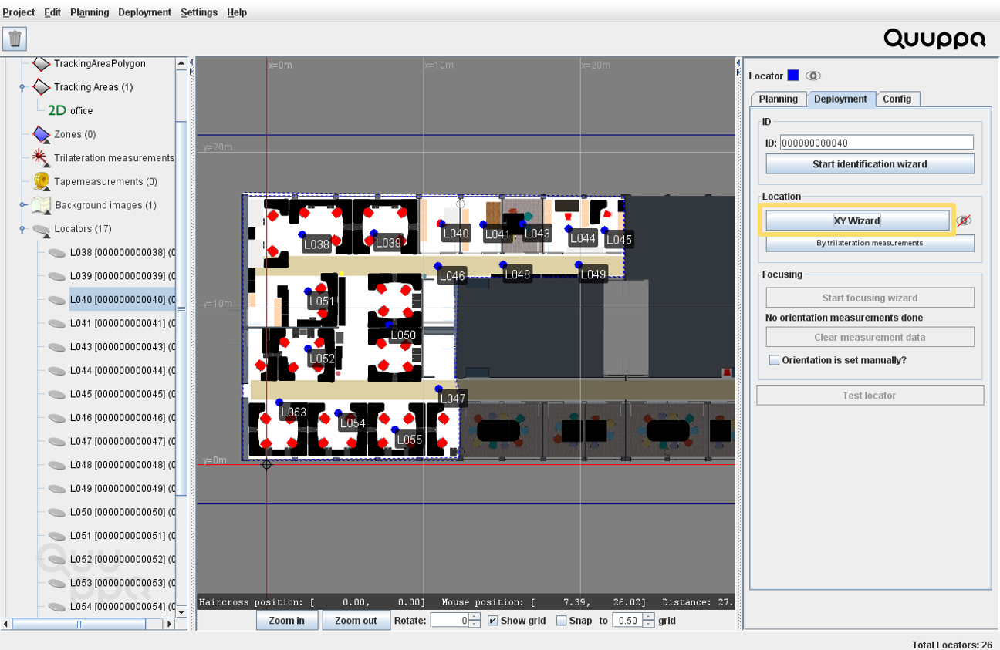

Project Deployment
Now that the system is physically installed, you can start deploying the project using the QSP. In this step, you will measure the position and orientation of the Locators, so that the system can calculate the positioning data of tracked items relative to the installed Locators. By taking care to accurately position, identify and focus the Locators at this stage, you will improve the accuracy of tracking results later. You will also configure the tags so that you can start tracking them.
-
Identify the Locators:
- Make sure that your Focusing Locator is connected to the PoE switch with a long enough Ethernet cable that allows you to move easily around the space. When connected to the PoE switch, the indicator light will blink green.
- Select a Locator in the QSP by clicking it.
- In the panel on the right, open the Deployment tab and click the Start Identification Wizard button. This will open the Identification Wizard window.
- If your Focusing Locator does not yet have a valid license, you will be prompted to enter you Quuppa Customer Portal (secure.quuppa.com) username, password (and 2-Factor Authentication if it is enabled).
- Check that the Locator's indicator light is blinking blue and the
Focusing Locator's indicator light is static green. If not, check your
connections, make sure the QPE is in deployment mode and restart the wizard.Note: You can check what mode the QPE is in by clicking the QPE Web Console icon on the desktop of your Quuppa Controller.
- Aim the Focusing Locator towards the selected Locator. Adjust your aim
so that the dot moves close to the center of the diagram (dot changes to
green) and keep aiming until the signal quality is good enough that the
wizard identifies the LocatorTip: Make sure you are close enough for a good quality signal.

- Repeat the steps b. - f. for all of the Locators.
-
Position the Locators in the QSP:
- Open the project in the QSP.
- Select the Locator that you want to position (using either the map view or the object tree).
- In the panel on the right, open the Deployment tab
and click the XY Wizard button.

- This will open the XY Wizard window. Follow the steps and instructions
given by the Wizard and you will get accurate coordinates for the
selected Locator.Note: Please use appropriate measurement tools to get accurate measurements for your project. We recommend a laser measurement tool for the measurements. A laser alignment tool and a tripod to keep the tools steady are also useful.
-
Repeat the process for all of the Locators.
-
Align the Locators:
-
If your Locators' orientation (LED Orientation) is one of the cardinals points regarding the deployment map, input in the correct Rotation angle.
Note:RIGHT Orientation = 0º
UP Orientation = 90º
LEFT Orientation = 180º
DOWN Orientation = -90º
-
Once the Locators Rotation is set, select the tick box Orientation is Set Manually?
- Once the Locator Rotation Angle is set, a small arrow will appear on the
Locator pointing in the direction of the Locator LED.Note: Follow the instructions at https://quuppa.com/product-documentation/manuals/q/QSP/topics/QSP_locators_focusing.html if you have not manually aligned your Locators.
-
-
Configure the tags:
Important: For Quuppa project deployment, Quuppa firmly recommends that only approved tags will be used when tracking physical tags. Quuppa supports projects involving Quuppa approved tags, tested devices and emulated tags for smart device tracking. Using emulated tags for project deployments remains at customer's sole risk and customer's own support.
I.e. a Quuppa emulated tag should be used only when tracking smart devices. The Quuppa tag emulation library can be found here:https://github.com/quuppalabs/demo-android-quuppa-tag.
- Create a Tag Group using the object tree on the left side. Right-click the Tag group object and select Add Tag Group.... Alternatively, you can create a new tag group by selecting from the menu bar Planning and Add Tag Group...
- Name the Tag Group.
- A new tag group is created and the tag group settings are visible on the settings panel on the right. Change configuration to ID_BADGE.
- Place the Focusing Locator (still connected to the PoE switch) on to the table facing upwards.
- In the QSP menu bar choose Deployment > Tag configurator tool. This will open a new window.
- Click the Autoconfigure Tags button and a new window will open.
- In the window that opens, select the Tag Group that you just created.
-
Click Start.
-
Push the button on the Tags to "wake them up" and place them on top of the Focusing Locator. The Tags will appear in the Tag configurator tool window.
Note: If you want to know which tag is which, you can check the tag ID number on the back of the tag. -
The configuration is ready when the system informs you that 'N moved to group, N configured, 0 configuration in progress, 0 no key'. Click the Stop button.
-
'Close the Tag configurator tool window.
- Save the project.